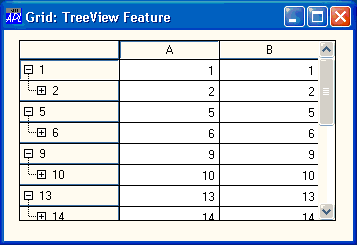
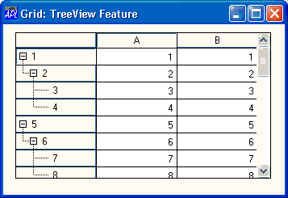

| Applies To: | Grid |
Description
This method is used to set the maximum visible depth of data in rows of a Grid.
The argument to RowSetVisibleDepth is a numeric scalar as follows
| [1] | Depth | integer |
All rows in the grid that have a value of RowTreeDepth less that or equal to Depth are expanded. Rows with a value of RowTreeDepth greater than Depth are collapsed.
Note:Expanding and Retracting events are not generated when this method is called.
'F'⎕WC'Form' 'Grid: TreeView Feature'
'F.G'⎕WC'Grid'(30 2⍴2/⍳30)
F.G.RowTreeDepth←30⍴0 1 2 2
F.G.RowSetVisibleDepth 1

F.G.RowSetVisibleDepth 99
